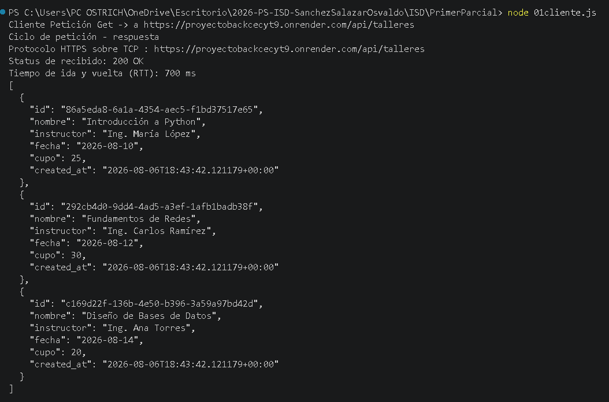

Ruta de la API: /api/talleres (Método GET)
Evidencia de la ejecución del script 01cliente.js en la terminal:

Al ejecutar el programa, sí se logró establecer la conexión exitosamente. Nuestro cliente realizó una petición asíncrona mediante el protocolo HTTP a la URL del backend alojado en Render.
El servidor recibió la petición, se conectó internamente a la base de datos para consultar la información requerida, procesó los datos y devolvió una respuesta válida al cliente sin arrojar errores.
A través del objeto Response obtenido por la función fetch, se extrajeron los siguientes elementos clave:
HTTPS sobre TCP, apuntando exactamente al endpoint solicitado.
200 OK. Esto indica a nivel de protocolo que la solicitud GET fue recibida, entendida y procesada con éxito por el servidor.
JSON. Tras parsear la respuesta con await respuesta.json(), se obtuvo la estructura de datos proveniente de la base de datos (los registros de los talleres), la cual fue impresa en consola debidamente formateada.